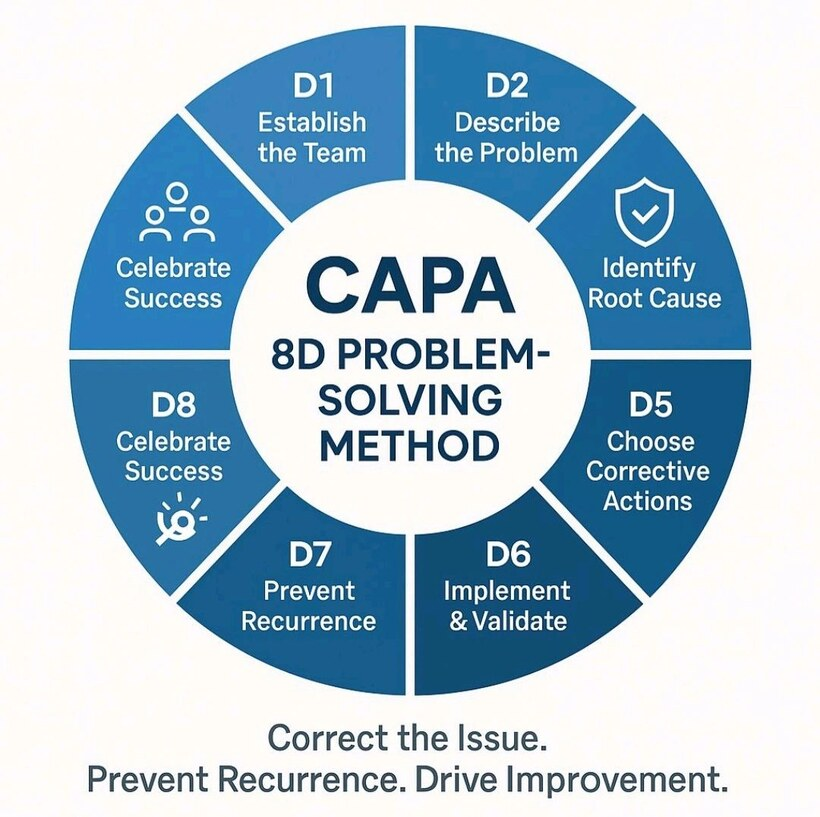

Green
Healthy Stock
The bin is still replenished during the regular inventory route. Green simply indicates that the remaining quantity is healthy and no urgent replacement order is needed.
Newly manufactured catheters were being shipped to international markets, where testing identified ethylene oxide (EO) residuals above the permitted limit. Reports were especially common for shipments traveling to more distant countries, and several related complaints resulted in a formal nonconformance.
Excess EO is a patient-safety concern because it can be cytotoxic, contribute to hemolysis, and act as an irritant.
The investigation identified both design and material contributors to the elevated EO residuals. Our task was to develop and implement a corrective and preventive action (CAPA) that addressed the immediate nonconformance and reduced the likelihood of recurrence.
The corrective action adjusted the EO cycle time and temperature. To validate the change, samples were allowed to aerate for longer intervals and were tested again after several days to measure the remaining EO residuals.
Long-term prevention required evaluating a permanent change to the aeration time and temperature, the catheter design, or the device material.

I contributed to CAPA-plan brainstorming and helped develop the sterilization verification controls. This work included calculating the revised time and temperature parameters and updating the applicable standard operating procedures (SOPs) and work instructions.
The updated controls required operators to document the total processing time and final temperature. A supervisor then reviewed and signed the record after the process was completed.
I also supported the documentation used to test samples over multiple days, including instructions for conducting the tests and analyzing the resulting data.
Following the first pilot build, 60 catheters underwent rigorous mechanical testing. Testing showed that the catheter tips cracked under a reasonable amount of applied force, but the underlying cause was unknown.
As a team, we used a Fishbone diagram to organize the possible causes of the cracking failure. Each potential cause was then investigated systematically to determine which factor was driving the defect.
During the analysis, we found that the catheter-tip wall thickness was substantially below specification, meaning the walls were thinner than intended, even though the manufacturing line had accepted the dimensions.
We ran a Gage R&R study on the measurement system to understand why the out-of-specification dimensions were passing inspection. The repeatability contribution exceeded 30%, indicating an unacceptable level of equipment-related variation in the measurement system.

When I spoke with laboratory technicians, they explained that the manufacturing-quality test scripts exceeded 80 pages and relied on layers of cross-references: one test referred to another procedure, which then pointed to additional instructions.
This structure made new-technician training time-consuming and the procedures difficult to remember, resulting in inconsistencies in how tests were performed.
My task was to consolidate and standardize the full test sequence into an intuitive format that shortened the learning curve and reduced operator errors caused by fragmented or difficult-to-follow instructions.
I converted the procedures into DOE-driven test scripts organized as structured tables. For each test sequence, one factor remained constant while the other factors changed systematically across runs, making the experimental logic clear to the technician.
The new format simplified data entry, made completed results easier to read and review, and reduced operator error by 18%.
Multiple R&D teams worked in a large shared laboratory. When a team needed a component, a team member contacted the inventory group, which then issued the requested quantity.
Demand was not always visible across teams. If one team unexpectedly used a large quantity, another team could be left without enough stock. Reordering was tedious and created delays, while separate teams sometimes ordered the same component independently and purchased more than the laboratory needed.
My task was to create a simpler inventory-control system that improved component visibility, reduced duplicate orders, prevented avoidable shortages, and lowered unnecessary spending without requiring expensive software.
I interviewed teams across the manufacturing line, software, and supply chain to understand how they managed material flow. Through those conversations, I identified Kanban as a practical approach for the R&D laboratory.
I proposed giving each team a dedicated rack with labeled component bins. Every bin would include a card listing the component name, identification number, specifications, and other essential information. Every bin would be replenished during the regular inventory route, regardless of color. Green, yellow, and red card queues would instead communicate how quickly a replacement order was needed: green for healthy stock, yellow for inventory approaching the red level, and red for urgent low stock.
Kanban is a visual inventory and workflow-management method developed by Toyota and now widely used in manufacturing. It uses visible signals—such as cards and color-coded queues—to communicate demand and trigger replenishment without relying on a complex software system.
The bin is still replenished during the regular inventory route. Green simply indicates that the remaining quantity is healthy and no urgent replacement order is needed.
The bin is replenished as usual, but yellow warns the inventory team that stock is trending toward the red level and additional units should be ordered soon.
The bin is replenished during the same route, while red signals that the available quantity is low and the replacement order requires immediate attention.
Each team becomes accountable for its assigned components and inventory budget, encouraging more deliberate ordering. The visual system also reduces hidden demand, unnecessary purchases, and duplicate orders; the proposed workflow reduced duplicate component orders by 32% per month.
If a team consumes components in bulk, inventory can fall faster than the ordering and replenishment cycle can respond, creating a delay. When usage is spaced out, the regular replenishment cadence should allow inventory to keep pace with demand.